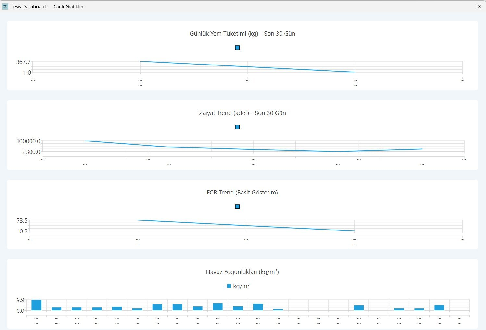
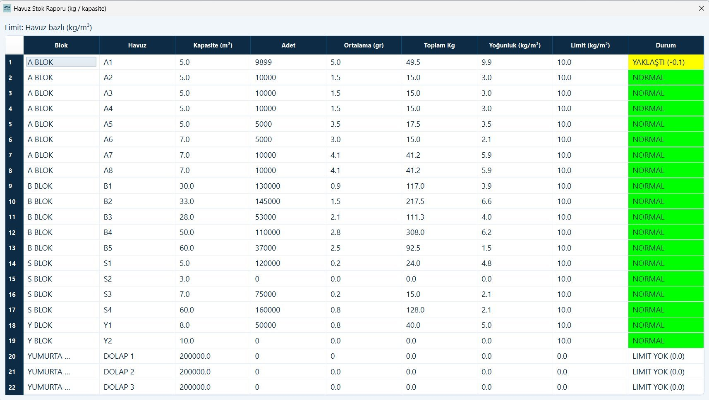
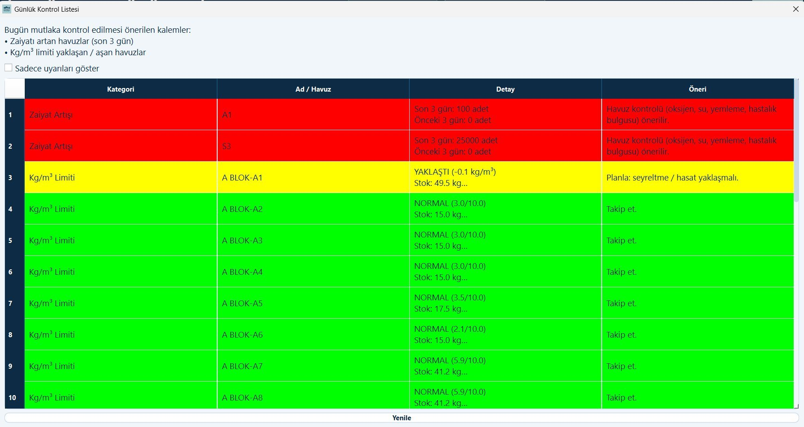
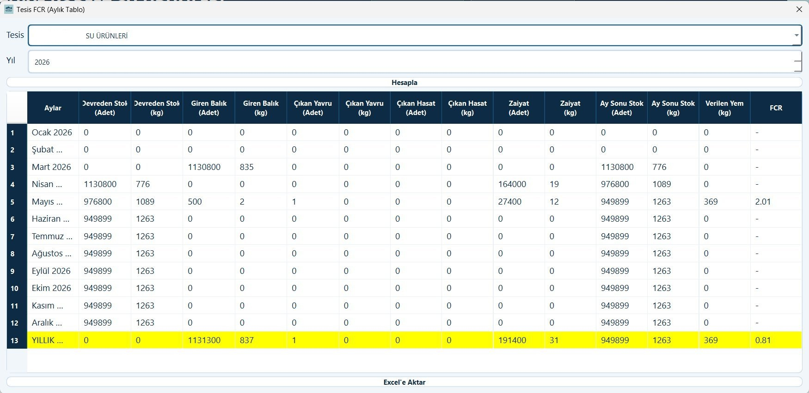
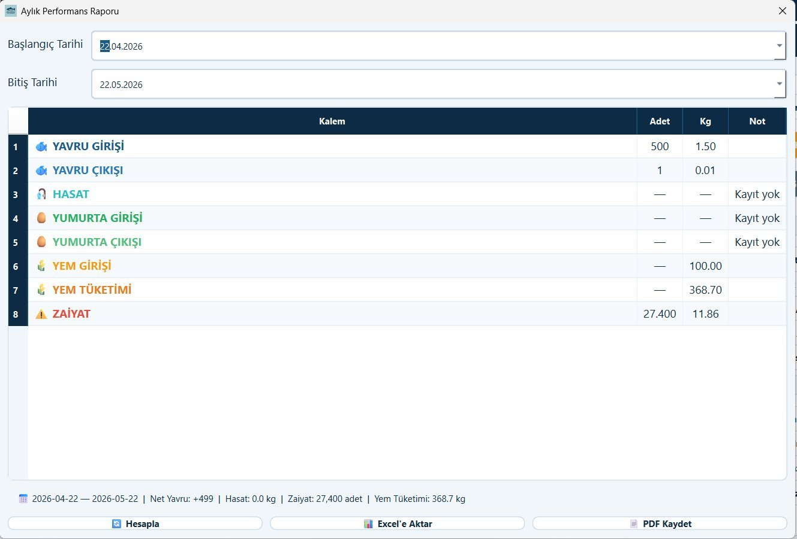

Tesis Dashboard —
Gerçek Zamanlı Grafikler
Günlük yem tüketimi, zaiyat trendi, FCR değerleri ve tüm havuzların yoğunluk bilgilerini anlık grafiklerle izleyin. 30 günlük veriler otomatik güncellenir.
- Günlük yem tüketimi çizgi grafiği (son 30 gün)
- Zaiyat trend analizi (adet bazlı)
- FCR trend gösterimi
- Havuz bazlı kg/m³ yoğunluk bar grafiği

Havuz Stok Raporu —
Tam Kapasite Görünümü
Tüm blok ve havuzların adet, ortalama gram, toplam kg, yoğunluk ve kapasite bilgilerini tek ekranda görün. Limite yaklaşan havuzlar sarı, aşanlar kırmızıya döner.
- Blok & havuz bazlı detaylı stok tablosu
- kg/m³ yoğunluk ve limit karşılaştırması
- Renk kodlu durum: Normal / Yaklaştı / Aştı
- Anlık toplam biyokütle ve adet özeti

Otomatik Yemleme Planı —
15 Günlük Blok Bazlı
Her havuz için ortalama gram, stok kg ve yem boyutuna göre 15 günlük yemleme planını tek tıkla oluşturun. Düşük oksijen riski varsa sistem yem miktarını otomatik %30 azaltır.
- Blok bazlı 15 günlük otomatik plan oluşturma
- Havuz bazlı yem boyutu ve günlük artış (‰) ayarı
- Düşük oksijen riski: %30 otomatik azaltma
- Excel'e aktarım (plan_15gun.xlsx)

Günlük Kontrol Listesi —
Akıllı Alarm Paneli
Her gün açılışta kontrol edilmesi gereken kritik kalemler otomatik listelenir. Zaiyat artışı olan havuzlar kırmızı, kapasiteye yaklaşanlar sarı, normalller yeşil gösterilir.
- Son 3 gündeki zaiyat artışı olan havuzlar kırmızı
- kg/m³ limitine yaklaşan havuzlar sarı uyarısı
- Her uyarı için aksiyon önerisi (seyreltme, hasat vb.)
- "Sadece uyarıları göster" filtre seçeneği

Yem Sipariş Önerisi —
Otomatik Stok Hesabı
Mevcut yem stoklarınız ve son 30 günlük ortalama tüketim hızına göre, hedef gün sayısı için kaç kg sipariş etmeniz gerektiğini sistem otomatik hesaplar.
- Marka ve numara bazlı yem stok takibi
- Günlük ortalama tüketim ve kalan gün hesabı
- Kırmızı: kritik, sarı: dikkat, yeşil: yeterli
- Önerilen alım miktarı otomatik hesaplanır

Zaiyat Raporu —
Havuz & Blok Döngü Bazlı
Tüm blok ve havuzlar için seçilen tarih aralığında zaiyat adet, kg ve günlük ortalama değerlerini görün. Toplam satırı sarı ile vurgulanır, Excel'e aktarın.
- Blok & havuz bazlı zaiyat detayı
- Son 15 veya 30 gün filtreleme
- Günlük ortalama adet hesabı
- Toplam zaiyat özeti ve Excel aktarımı

Tesis FCR Raporu —
Yıllık Aylık Kırılım
Tesisinizin yıllık FCR performansını aylık bazda izleyin. Giren balık, çıkan yavru, hasat, zaiyat ve verilen yem miktarlarını tek tabloda görün. Yıllık toplam satırı sarı ile vurgulanır.
- 12 aylık FCR karşılaştırma tablosu
- Yıllık toplam ve FCR özeti (sarı vurgulu)
- Giren/çıkan yavru, hasat, zaiyat karşılaştırması
- Excel'e aktarım ile kolay paylaşım

Aylık Performans Raporu —
Özet & PDF Çıktı
Seçilen dönem için yavru girişi, hasat, yem tüketimi ve zaiyat özetini tek sayfada görün. Alt satırda dönem özeti otomatik hesaplanır. PDF veya Excel ile paylaşın.
- Dönem bazlı özet: yavru, hasat, yem, zaiyat
- Net yavru, toplam hasat ve yem tüketimi özeti
- PDF kaydetme özelliği
- Excel'e aktarım
